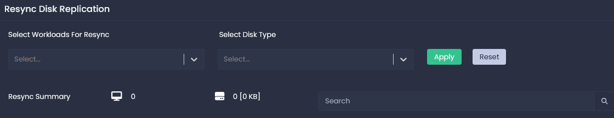
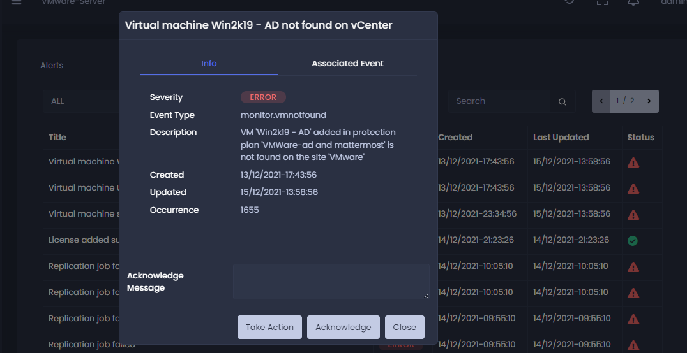

Introduction
Datamotive Hybrid Multi-Cloud Workload Mobility and Business Continuity product suite delivers a disaster recovery and workload migration service and offers cloud economics to help keep your disaster recovery and migration costs under control.
Datamotive Workload Mobility can be used to protect your virtual machines/instances on primary site by replicating them periodically to the recovery site. The protected virtual machines/instances can then be recovered as needed in the recovery site as native instances (E.g., protected virtual machine is recovered as a native AWS EC2 instance or a GCP Compute instance).
Current release of product has been tested on VMware & AWS as Protected Site and AWS and GCP Cloud as Recovery Site.
This document provides information about how to install and configure Datamotive solution. It also provides a general overview of Datamotive solution and it’s different components.
Intended Audience
This information is intended for anyone who wants to use Datamotive solution. The information is written for experienced Windows or Linux system administrators who are familiar with virtual machine technology and datacenter operations.
Supported Datamotive Solution Version
The contents of this guide are applicable to Datamotive solution version MVP 1.1
Datamotive Component Architecture
Datamotive solution is composed of following components deployed as independent virtual machines. All the components are shipped either as virtual appliances or cloud native machine images depending on the target infrastructure
-
Datamotive Management Server – a virtual appliance deployed in protected or recovery site infrastructure where the virtual machines need to be protected or recovered or migrated. Management Server provides user interface (UI), a CLI and REST APIs for the IT administrators to perform Day0-DayN activities. The server also acts as replication node. It is shipped as an OVA for VMware environment & cloud native machine image for AWS & GCP environments. Management server supports replication & recovery for smaller loads (Upto 20 Virtual Machines disks)
-
Datamotive Replication Node– a virtual appliance deployed in protected or recovery site. It is used to execute the data replication jobs. This node can be used to increase the overall replication capacity of the solution based on the number of protected VMs/instances. Maximum number of parallel replication jobs (1 replication job per protected virtual machine disk/volume) supported by each node is defined by the limit provided by Cloud platforms (AWS: 20, GCP: 128). However, for optimum performance, Datamotive solution limits the capacity of each replication node to 20 parallel disks. It is shipped as an OVA for VMware environment & cloud native machine image for AWS or GCP environment. Datamotive solution scales horizontally using the Replication Nodes
-
Datamotive Prep Node – a Windows virtual appliance deployed in the recovery site infrastructure (VMware, AWS or GCP). This appliance is powered-on and used only when Windows VMs are getting recovered or migrated. It is shipped as an OVA for VMware environment & cloud native machine image for AWS or GCP environment.
-
Datamotive DeDup Node – a virtual appliance deployed in the recovery site (public cloud) infrastructure (AWS or GCP) where the protected virtual machines will be recovered in the event of a disaster or when VMs are migrated. It is shipped as native cloud image for AWS & GCP environments.
Following diagram shows the deployment & network topology of these nodes

What can you do with Datamotive
Datamotive currently provides fully functional and intuitive GUI for performing all supported operations. Once deployed, admins can access the Datamotive GUI by logging in to the Management Server on Protected Site. The URL for accessing the management server is Server IP Address>:5000. Default credentials to access the application are administrator/admin.
DR Administrators can perform following set of Day1-DayN operations using the Datamotive GUI. Subsequent sections of this document describe the user interface and related options in detail.
| Category | Action/Activity | Description | Link |
|---|---|---|---|
| Provisioning | Nodes Management | Management of different nodes of Datamotive solution | |
| Site Management | Creation and management of protected & recovery sites using the nodes already created | ||
| Protection | Protection Plan | Create & manage protection plans for workload protection | |
| Test Recovery | Validate replicated instances through non-disruptive test recovery | ||
| Full Recovery | Recover protected instances on recovery site | ||
| Migration | Migrate instances from source to target platform | ||
| Monitoring | Replication/Recovery Jobs | View replication & recovery jobs for their replication statuses | |
| Events/Alerts | View, Acknowledge, Take Action on Events & Alerts | ||
| Infrastructure | Monitor & Detect changes in protected instances and take appropriate corrective actions on recovery instance configuration | ||
| Configuration | User Management | View users of system with their roles & privileges | |
| Bandwidth Throttling | Configure bandwidth usage for changed data transfer | ||
| Email Settings | Configure email settings to enable email notifications for supported alerts | ||
| Tech Support | Manage support bundle creation for troubleshooting purposes | ||
| Scripts | User defined custom scripts to be executed during recovery operations | ||
| License | Manage licenses |
Support Matrix
Infrastructure
| Component | Supported Versions |
|---|---|
| VMware vCenter Server | vCenter Server 6.5 (U3) vCenter Server 6.7 vCenter Server 6.7 (U1, U2, U3) vCenter Server 7.0 |
| ESXi Host | ESXi 6.5 (GA, U1, U2) ESXi 6.5 (U3) ESXi 6.7 (GA, U1, U2) |
| AWS | EC2 |
| GCP | Machines |
Guest OSs
| Component | Supported Versions |
|---|---|
| CentOS | 7.9 Kernel Versions: 3.10.0-1160.71.1.el7.x86_64 3.10.0-1160.66.1.el7.x86_64 3.10.0-1160.62.1.el7.x86_64 3.10.0-1160.59.1.el7.x86_64 3.10.0-1160.53.1.el7.x86_64 3.10.0-1160.el7.x86_64 7.8 Kernel Versions: 3.10.0-1127.19.1.el7.x86_64 3.10.0-1127.18.2.el7.x86_64 3.10.0-1127.13.1.el7.x86_64 3.10.0-1127.el7.x86_64 |
| RHEL | 7.9 Kernel Versions: 3.10.0-1160.71.1.el7.x86_64 3.10.0-1160.66.1.el7.x86_64 3.10.0-1160.62.1.el7.x86_64 3.10.0-1160.59.1.el7.x86_64 3.10.0-1160.53.1.el7.x86_64 3.10.0-1160.el7.x86_64 7.8 Kernel Versions: 3.10.0-1127.19.1.el7.x86_64 3.10.0-1127.18.2.el7.x86_64 3.10.0-1127.13.1.el7.x86_64 3.10.0-1127.el7.x86_64 |
| Ubuntu | Ubuntu 14: 4.4.0-148-generic Ubuntu 16: 4.15.0-45-generic 4.15.0-142-generic 4.10.0-28-generic Ubuntu 20: 5.11.0-27-generic |
| Windows | Standard & Datacenter editions of following versions. 2K12 2K16 2K19 |
| SUSE | Suse 15 SP3 Kernel version: 5.3.18.57-default Suse 15 SP2 Kernel version: 5.3.18.22-default |
Client Browsers
| Component | Supported Versions |
|---|---|
| Google Chrome | 99.0.4844.82 99.0.4844.84 |
| Microsoft Edge | 100.0.1185.29 |
| Mozilla Firefox | 98.0.2 |
Features
Authentication

Open the Datamotive UI through URL: \< Datamotive_Service_IP >:5000
-
Provide the username and password and press Login
-
On successful login, User will see the Datamotive Dashboard.
-
By default Datamotive will create following three users
-
Administrator
-
DRadmin
-
Guest
-
-
Default password for all the users is ‘admin’
Note: If you are login first time then for security reasons password change is must.
-
Provide the current password and new password.
-
Click on change password button to set new password for the system.

Dashboard
The Dashboard provides you with an at-a-glance overview of the data protection status of your environment. The Dashboard contains the following features.

Title Windows
Title windows will give overall status on your configured and protected environment.

| Title | Description |
|---|---|
| Sites | Sites configured on the node. |
| Protection Plans | Protection plans configured. |
| Protected Machines | Total number of protected virtual machines |
| Storage | Overall protected storage size. |
Alert Statistics
Active alter which needs a user action acknowledgement or action on it.

RPO and RTO Statistics
Current recovery time objective and recovery point objective.

| Title | Description |
|---|---|
| RPO | Average recovery point objective value |
| RTO | Average of recovery time object value |
| Test Executions | Test executions completed successfully. |
| Full Recovery | Virtual machines recovered successfully. |
| Migrations | Virtual machines migrated successfully. |
Replication Statistics
Replication statistics provides an overview of your protected environment replication jobs.

| Label | Description |
|---|---|
| Completed | Successfully completed replication iterations. |
| Running | Replication iterations which are in-progress. |
| Failed | Failed replication iterations. |
| Change Rate | Average data change rate for all protected virtual machines |
| Data Reduction | Average percentage of data reduction for all the completed replications. |
Jobs
Jobs shows the recently started or completed task in the system.

Virtual Machine Protection Analysis
Virtual machine protection analysis shows the overall status of recovery site environment in terms of total discovered virtual machines with percentage of protected and unprotected virtual machines. In addition to protection analysis, this wizard also provides the details for replication statistics of virtual machines which are in-sync and not in-sync.

Bandwidth Usage
Bandwidth usage provide the details network usage of the system for last 12 hours.
The bandwidth usage chart shows data downloaded and uploaded for last 12 hours.

Site Connections
Provides connection details of configured sites in terms of data flow i.e., from which source site data replication is configured for target site.

Events
Events are records of user actions or system actions that occurred in the Datamotive system. The Events widget provides most recent 5 events generated in the system.

Nodes
This section displays all the nodes registered with the management node along with their status. This is a snapshot for how different nodes in Datamotive are working together.

Nodes Configuration
Nodes are entities where the Datamotive server is installed (Ex. AWS, GCP, VMWare, etc.). Datamotive Nodes are of different types like Management, Replication, Dedup & Win Prep. Each node has specific functionality.
-
Management: Node for performing Datamotive management operations. There must be one and only Management node for each site. Management also has a replication engine which allows it to double up as replication node too.
-
Replication: Nodes responsible for performing replication activities. These can be added based on number of Virtual Machine disks to be replicated in parallel. Any number of nodes can be added to meet the requirement for large scale environment.
-
Dedup: This is a special type of node required to support deduplication. This node is required only on the Recovery site.
-
Win Prep: This is also a special type of node required only on Recovery site to perform Windows workloads recovery.
For all the nodes, Datamotive provides separate OVAs & cloud specific machine images. Once Node of given type is deployed in the infrastructure, it needs to be added in the Datamotive Management server. Nodes must be deployed and configured in following manner.
-
Management Node: Deploy 1 management node per protected site. Local node representing the management node automatically gets registered.
-
Remote Management Node: Deploy 1 management node per recovery site. Register the management nodes from Recovery Sites in Management Node of Protected Site.
-
Replication Nodes: Deploy replication node based on load. Once deployed register replication node in the local management server. Replication nodes are always added to local management node only.
Currently, Datamotive supports replication of 20 virtual disks per replication node.
-
Dedup Node: Deploy the Dedup node on Recovery Site. Once deployed, register the Dedup node with Management Node on the Recovery Site.
-
Win Prep Node: Deploy the Win Prep node on Recovery Site. Once deployed, register the Win Prep node with Management Node on the Recovery Site.
To Access Node option, Go to Configure -> Nodes (Note- By default the Local node will be configured.)
To add new node -
Click On “+ New” option as shown below -

It consists of the below options-
| Name | Name to identify the node. For management node, the name must be “dm-repl-server”. For all other nodes, the name has to be same as that of name of the VM where this node is deployed. |
|---|---|
| Hostname | This is FQDN or IP address of the server |
| Username | This is the username of the Datamotive Engine |
| Password | This is the password of the Datamotive Engine |
| Type | The type of Datamotive server which is being added. Type consists of 4 options - Management, Replication, Prep Node and Dedupe Server |
In Type select the appropriate option from the drop down -
| Type | Description |
|---|---|
| Management | Core management server |
| Replication | Used for replicating the changed data from source to target & during recovery operations |
| Prep Node | Prep Node is used when you would want to recover the Windows server |
| Dedupe Server | Used for de-duplication of data |

(Note – Based on the selection of Type, further details need to be entered). Ex. In option, the management type is selected. It consists of the below options -
| Platform Type | Platform where the node is deployed |
|---|---|
| Management port | Port on which the management service runs (By default, it 5000) |
| Replication Data Port | Port on which the replication data service runs (By default, it 5001) |
| Replication Controller Port | Port on which the replication controller service runs (By default, it 5003) |
| Encryption Key | Data will be encrypted using this key while transferring from one node to another node.
The key for the node can be accessed in the remote management node, under the node configuration section. |


Once the details are entered click on Configure option.
Sites configuration
Sites are infrastructure where the source or target workloads reside. Site consists of platform type and platform details. In the Datamotive UI, go to Configure tab on the left-hand side panel and select Sites.

Site can be of following types:
Protection - A protection site is the source of the protection plan workload replication.
Recover - A Recover site is the destination for the protection plan workload replication.
Create Site
To create site, click the “+ New” button and Create site windows will pop-up.
The common inputs are
| Name | Desired name to identify the site |
|---|---|
| Description | Short information about the site |
| Site Type | (Protect/Recover) - Select the site type based on source or destination. |
| Platform Type | Select the Platform type - VMware/AWS/GCP |
| Node | Select the node based on the Platform type where the workloads are hosted (Note: Based on the platform type and node the options change) |

Platform Specific Parameters:
| Platform Type | Parameter | Description |
|---|---|---|
| VMware | vCenter Server IP | Enter the vCenter Server IP address where the workloads are hosted |
| Port | Enter the Port on which vCenter Server is running. Default is 443 | |
| Username | Enter the vCenter Server username | |
| Password | Enter the vCenter Serer password | |
| AWS | Region | Select the desired region where the workloads will be Protected/Replicated/Recovered |
| Zone | Select the desired zone in the region where the workloads will be replicated/recovered | |
| Access Key | AWS User Access Key | |
| Secret Key | AWS User Secret Key | |
| GCP | Region | Select the desired region where the workloads will be replicated/recovered |
| Zone | Select the desired zone in the region where the workloads will be replicated/recovered | |
| Project ID | Enter the project id from the GCP console |
Click on configure to create the site and on successful creation, site will be listed in the list view.

V Center Server IP
Edit Site
To Edit a site, click on Edit button and then Edit windows will pop-up.
Edit the input which need to be changed and click on configure to save the configuration.

Remove Site
Click on Remove button to delete one or more sites. On click of confirm, the sites will be deleted. Make sure that site isn’t referred in any Protection Plan before removing.

Protection Plans
Protection Plans are the core units for protecting the workloads. Protection Plans define source & target sites, virtual machines to be protected, their boot orders, replication schedule, recovery configuration for the virtual machines. All of these steps are configured using a wizard. Based on this information, Datamotive performs the replication & recovery operations.
Create Protection Plan
To create a new protection plan, click on + New button in protection plan list, create protection plan wizard is shown. Follow the guided steps to configure protection plan.
Prerequisite
VMware platform:
-
VMware tools must be installed in all the Virtual Machines which needs to be protected.
-
CBT (Change block tracking) must be enabled for all the Virtual Machines and their disks.
Step 1: General
| Name | Desired name of the protection plan |
|---|---|
| Protect Site | Source protection site |
| Recovery Site | Destination recovery site |

Step 2: Virtual Machines
Select the virtual machines to be protected and click next. Use search & pagination to find virtual machines.

Step 3: Recovery Configuration
Provide the virtual machine specific recovery configuration which will be used for creation of instance on recovery site. Recovery configurations vary based on Recovery Site Type. Below are the options user need to configure for each protected instance.
General
| Instance Type | Instance type on cloud site - Example t2.micro on AWS or n1-standard-1 on GCP. |
|---|---|
| Volume Type | Instance volume type on cloud site - Example GP-2 on AWS or standard on GCP. |
| Volume IOPs | IOPs value for supported Volume Types. Please note that the IOPs values are submitted for volume creation without validations. Make sure that all the rules specific to selected volume type are followed while specifying the IOPs value |
| Tags | Instance tags. Example – Tag Key – Name Tag value – dm-repl-node |

Network
For instance, network configuration click on config button, will open a network configuration popup window. Network configurations vary based on the target platform
For AWS platform as recovery site, the following configuration options are provided-
| VPC | Virtual Private Cloud (Amazon VPC) enables you to launch AWS resources into a virtual network that you've defined. |
|---|---|
| Create from Source | This option is used when you need to copy the network configuration from the source instance. All the options like subnets, IP address and security groups get auto-filled as the source instance. This option is supported only in case of AWS to AWS |
| Subnet | Subnet ID which will assigned to the instances in this protection plan. For AWS to AWS, subnets from all zones within target region are displayed. From any other source to AWS, subnets from zone where the Datamotive node is deployed are displayed. Datamotive supports multi-zone recovery only when both source and target is AWS. |
| Auto Public IP | Click on the checkbox if you want to auto assign a public Ip to instance. Note - only one network card can be configured if public Ip is enabled. |
| Elastic IP | Select from allocated elastic IP address pool if any. |
| Private IP | Provide the internal IP address for the instance or leave blank for auto assignment. (Please ensure to specify Private IP in the same range as that of given Subnet and is unique too) |
| Security Groups | Select the security groups all configure inbound and outbound traffic for the instance. |

For GCP platform provided the following details
| Network | Network which will be assigned to the recovered instances in the Protection Plan |
|---|---|
| Subnet | Subnet ID which will assigned to the instances in this protection plan |
| Private IP | Provide the internal IP address for the instance or leave blank for auto assignment. |
| External IP | Select one of the following options if external Ip address is required for the selected network card else select none. 1. Auto: GCP will assign a Ip address from its public Ip pool. 2. None: select if external not required. 3. Reserved IP address, GCP project reserved Ip address, will be listed along with above two options. You can select any reserved Ip address from the list. |
| Network Tier | Network Service Tiers lets you optimize connectivity between systems on the internet and your Google Cloud instances. Premium Tier delivers traffic on Google's premium backbone, while Standard Tier uses regular ISP network. |
| Firewall Tags | The target tag defines the Google Cloud VMs to which the rule applies |

Step 4: Replication Scripts
Datamotive supports executing custom scripts at various levels to allow all the customizations users need for replication & recovery workflows. The scripts are supported for individual VM and complete protection plan as well. The scripts are available as both, pre and post hooks. To use pre or post scripts, first upload the pre & post scripts to Datamotive management node on both protected & recovery sites using scripts section in settings. Once the scripts are uploaded, they will be visible in the pre and post replication scripts option. Datamotive currently supports Python 3.x, Golang & Shell executable scripts. All the scripts must be in form of executables to work. E.g. they should get executed as ./\<script_file_name>. Scripts are supported at following different levels. The scripts are also executed in the below order during replication & recovery operations.
| Script Type | Execution Level | Script | Description |
|---|---|---|---|
| Replication | Protection Plan | Pre-Script | Executed in each replication iteration as a first step. |
| Virtual Machine | Pre-Script | Executed in each replication iteration before every virtual machine’s snapshot is taken | |
| Virtual Machine | Post-Script | Executed in each replication iteration after virtual machine’s snapshot is completed | |
| Protection Plan | Post-Script | Executed in each replication iteration after all the virtual machine’s snapshot operation is completed | |
| Recovery | Protection Plan | Pre-Script | Executed during Test/Full Recovery & Migration operations as a first step |
| Virtual Machine | Pre-Script | Executed before starting recovery of every virtual machine | |
| Virtual Machine | Post-Script | Executed after every virtual machine is recovered | |
| Protection Plan | Post-Script | Executed after completion of recovery operation for all virtual machines. |
Following screens show options where user can select/upload various scripts.

Scripts Input
Currently, Datamotive supports only binary for execution. The runtime available for scripts is Shell, Bash, Python 2.x & GOLang. In future, binding for different languages will be provided. On invocation the recovery scripts, Datamotive provides following parameters in the order.
Pre-script: \<None>
Post-script: JSON string with following format
{
[
{
“Name”: \<VM Name>,
“IP”: \<Newly assigned IP address of recovered VM>,
“Username”: \<Login username of the recovered VM>,
“Password”: \<Login password of the recovered VM>
}
]
}
Scripts Output
The scripts are checked for it’s completion and the process exit status is captured. If there are no errors in executing the script, Datamotive considers it to be successfully executed. If there are errors, the recovery is marked as Partially Completed.

Step 5: Boot Order
Using boot order configuration defines the boot delay and virtual machine boot order.
Boot Delay : Delay in seconds between virtual machines specified in the boot order
Boot Order : Order in which virtual machines will get recovered or migrated. Lower number will get recovered first

Step 6: Replication Configuration
Replication configuration allows user to specify the schedule for periodic replication of protected virtual machines. User can configure following parameters.
| Start Time | Time from when protection plan replication will start. |
|---|---|
| Replication Interval | Time interval in which the virtual machine’s changed data will be replicated |
| Encryption on Wire | Data encryption while transferring from source to destination. |
| Compression | Data compression while transferring from source to destination |
| Dedup | Enables the data deduplication. Note: Deduplication node should be pre-configured on recovery site before using this feature |
| Differential Reverse Replication | Enable this feature if you want to allow recovered machines from the recovery site to replicate back to its original source site. |

Step 7: Scripts
As described in earlier scripts section, these are Replication & Recovery scripts at Protection Plan level.

Step 8: Summary
Review the summary for the protection plan and click finish to configure the protection plan. On successful configuration, replication jobs will start for the virtual machines selected for this protection plan.

Protection Plan Actions
Action on protection plan is available through the protection plan list and through the protection plan details page. Action will get enable depending upon the context and state of the protection plan. Protection Plan actions also differ based on whether the plan is viewed on protected site or recovery site. Certain actions are available only at one site as shown below
Actions available through the protection plan details
Actions for source site Actions for recovery site


Actions available through the protection plan data grid view on source site

New: Click to configure new protection plan.
Edit: Select protection plan from the list and click edit. Edit protection plan wizard will get open. In edit protection following operations were allowed
-
Add new virtual machine to plan.
-
Remove protected virtual machine from the plan. This action gets completed on next successful iteration of the protection plan. The VM shows as “Removing” till that time.
-
Recovery configuration modification.
-
Boot order configuration & modification.
-
Replication configuration
-
Scripts modification.
Start: Start Replication for the selected protection plan.
Stop: Stop the protection plan replication.
Remove: To remove the protection plan, click on the Remove button and it will ask for the confirmation. On confirm, the protection plan will get deleted. Note protection plan should be in stopped state with no running jobs.
Recovery
After the Protection Plans are configured and replication of virtual machines is in-sync, user can trigger various recovery operations from the Datamotive Management Server on the recovery site. To initiate recovery or migration go to Home —> Configuration —> Protection Plan -> Click on the protection plan on which recovery or migration operation need to perform.
Click on the Actions button. All available operation will get listed.
Test Recovery
Prerequisite
At least one replication job has been completed successfully for the virtual machine and the sync status for that job should be In-sync.
Step 1: Select Virtual Machines
Select the virtual machines for the test recovery. Provide the credentials to execute the pre and post scripts. If there are no scripts for the virtual machine, then credentials are not mandatory.

Credentials are not stored anywhere and only been used for the workflow.
NOTE: For Windows recovery on AWS, Credentials are mandatory even if there are no scripts.
Step 2: Recovery Configuration
-
Install System Agents: For AWS, install OS agents like EC2Launch and SSMAgents. For GCP, install google os-config and compute-engine agents.
-
Install Cloud Packages: For AWS. install AWS Cloud SDK and for GCP, install GCP Cloud SDK.

Step 3: Summary

Review the summary and click on finish to start the test recovery. This will start the test recovery jobs for the selected virtual machines and jobs can be monitored in the Home —> Jobs —> Recovery.

Test Recovery validation
Check the status of the virtual machine's recovery jobs in the Home —> Jobs —> Recovery.
Check the Cloud Console (AWS and GCP) for the instances with the virtual machines name and their running status. AWS also has status checks.
On successful completion of recovery jobs, IP Address can be found for the new running instances.
For Windows machines, download the RDP file by click the download button right next to the IP address and check the windows machine through RDP.
For Linux machines, copy the IP address and check the linux machine through ssh.
Note: Once the validations are completed, Datamotive recommends to remove the Test Recovered instance. Leaving test recovered instances running may lead to increased cloud cost.
Full Recovery
To perform full recovery after disaster in the source site, open Management Application on Recovery Site and go to Home —> Configuration —> Protection Plan –> Click on the Protection plan.
Click on Action button and select Recovery
Prerequisite:
At least one replication job has been completed successfully for the virtual machine and the sync status for that job should be init-success.
Step 1: Select Virtual Machines
Select the virtual machines for the recovery. Provide the credentials to execute the pre and postscripts. If there are no scripts for the virtual machine, then credentials are not mandatory.
Credentials are not stored anywhere and only been used for the workflow.
NOTE: For Windows recovery on AWS, Credentials are mandatory even if there are no scripts.

Step 2: Recovery Configuration
-
Install System Agents: For AWS, install OS agents like EC2Launch and SSMAgents. For GCP, install google os-config and compute-engine agents.
-
Install Cloud Packages: For AWS. install AWS Cloud SDK and for GCP, install GCP Cloud SDK.
Step 3: Recovery Summary
Review the summary and click on finish to start the recovery. This will start the recovery jobs for the selected virtual machines and jobs can be monitored in the Home —> Jobs —> Recovery.
NOTE: If the replication job is on-going at the time of Full Recovery, then the instance will be recovered from the last known good state.


Recovery Job Status
Migration
Migration also follows the recovery workflow for the protected VMs. To migrate the workloads, go to Home —> Configuration —> Protection Plan à Click on the protection on which migration need to perform, on the Recovery site.
Click on actions buttons and select Migrate
Prerequisite:
In case of migration, to make sure there is no loss of data, the virtual machine(s) should be in power off state and the last replication jobs should be successfully completed with zero changed data.

Step1: Select Virtual Machines

Select the virtual machines and provide the credentials if there are pre- or post-configured for these virtual machines.
Note: For Windows machine in AWS, credentials are mandatory.
Step 2: Recovery Configuration
-
Install System Agents: For AWS, install OS agents like EC2Launch and SSMAgents. For GCP, install google os-config and compute-engine agents.
-
Install Cloud Packages: For AWS. install AWS Cloud SDK and for GCP, install GCP Cloud SDK.
Step 3: Summary
Review the summary and click on finish to start the Migration. This will start the test migration jobs for the selected virtual machines and jobs can be monitored in the Home —> Jobs —> Recovery jobs.


Job's view after migration completed
Reverse
The reverse is available when the Virtual Machines needs to be replicated back to the Source Site (Especially in case for Disaster Recovery) Currently reverse is supported VMware to AWS and AWS to AWS only.
After the full recovery, the reverse option is enabled and is visible under the Actions option when you click on the desired Protection Plan that needs to be reversed

After the reverse option is clicked, the pop-up for the reverse workflow opens -

The Reverse can be achieved in 2 options-
-
Full Incremental – This option is used when the entire data needs to replicated back to the source site in the 1st iteration and then onwards the incremental data (changed data) is replicated
-
Differential- This option is used when only the differential data needs to be replicated back to the source site
Note – This option can be used only when the differential option is enabled in the Edit plan option before the Full Recovery
The Reverse pop-up has the following options –
| Name | the Name of the protection plan |
|---|---|
| Protection Site | Source Site after reverse |
| Recovery Site | Target Site after Reverse |
| Replication Type | Full Incremental/Differential |
| Recovery Machines Suffix | Desired suffix to be entered during reverse (not a mandatory option) |
| Replication Interval | The time between 2 iterations |
Once the Next option is clicked, the summary page is displayed

After checking the summary and clicking the Finish option. The reverse iteration is started and can be viewed in the jobs sections
The flow for the replications/test recoveries/Full recoveries remain the same as stated in the document.
Jobs
Jobs are logs of every replication & recovery action performed in the system. Datamotive maintains detailed information of each job executed by the system. Jobs provide a real time mechanism to view the currently executing operations in the system.
Navigation: Home --> Jobs
You can use the Jobs page to monitor the overall status of replication and recovery jobs.
Replication
The Replication Jobs tab provides details about all the running, completed, and failed replication iterations. The Replication job section has the following sub-section to show replication jobs base on the grouping criteria.
Protection Plan
Navigation: Home --> Jobs --> Select Protection Plan.
Protection plan replication details provide a list of protection plans.
Each protection plan has its associated virtual machine replication
information.

click  icon or title to view
protection plan level details.
icon or title to view
protection plan level details.

| Column Name | Description |
|---|---|
| Name | Name of virtual machine associated with the protection plan. |
| Iteration | The total number of replication iterations completed. |
| Total Changed | Total data changed. |
| Total Transferred | Total data transferred to the replication server. |
| Data Reduction (%) | Overall data reduction. |
| Job Status | Status of latest replication iteration.
|
| Sync Status | Virtual machine sync status.
|
Virtual Machines
Provides a list of replication details for each protected virtual machine.

Note: For failed jobs, hover on the Sync Status column to get details of the status. Hover on the Replication Duration column to get Replication start & end time.
| Column Name | Description |
|---|---|
| Virtual Machine | Name of the protected virtual machine. |
| Iteration | Total number of replication iterations completed. |
| Changed | Total changed data discovered. |
| Transferred | Total data transferred to the replication server. |
| Replication Duration | Time took to complete iteration. |
| Job Status | Status of replication iteration. |
| Sync Status | Virtual machine sync status. |
Disks
Provide a list of replication details for each protected virtual machine disk/volume.

| Column Name | Description |
|---|---|
| Virtual Machine | Name of the protected virtual machine. |
| Disk Id | Disk id of virtual machine. |
| Data Changed | Total changed data discovered for the disk. |
| Data Transferred | Total data transferred to the replication server. |
| Replication Duration | Time took to complete iteration. |
| Job Status | Status of replication iteration. |
Recovery Jobs
The Recovery jobs tab provides details about all the running, completed and failed recovery operations.
Protection Plan
Protection plan recovery details provide a list of protection plans. Each protection plan has its
associated recovered (Full / Test) or migrated virtual machine information.

click
icon or title to view protection plan level details.

| Column Name | Description |
|---|---|
| Name | Name of virtual machine associated with the protection plan. |
| Duration | The time required to complete the recovery. |
| Recovery Type | Recovery Type (Full Recovery, Test Recovery or Migration) |
| Status | Recovery/Migration status. |
Virtual Machines
Provides a list of recovered (Test/Full) or migrated virtual machines.

| Column Name | Description |
|---|---|
| Virtual Machine | Name of virtual machine. |
| Duration | The time required to complete the recovery/migration. |
| Recovery Type | Recovery Type (Full Recovery, Test Recovery or Migration) |
| Job Status | Recovery job status.
|
| IP Address | Recovered virtual machine IP address. |
Monitor
Monitor Option is used to see the events, alerts and customized reports as they are generated. Events & Alerts contain audit log information about all the critical actions performed in the system.
In Monitor, there are 3 options-
-
Events
-
Alerts
-
Reports
Events
Navigation – Monitor -> Events
Events are Datamotive server or user generated incidents which are generated automatically when they occur.
There are 4 types of Events
| Information | This are events occurred just for the information |
|---|---|
| Warning | This are events occurred to take precautionary action |
| Error | This are events occurred when there is an issue and needs to be addressed |
| Critical | This are events occurred when there is an issue and that needs to be addressed at the earliest |
To see “Events”, go to “Monitor” option and click on “Events”

In events, the following information is displayed –
| Date | The date and time when the event has occurred |
|---|---|
| Topic | The topic of the event |
| Level | The level of the event occurred (Ex. Information, warning, Error, Critical) |
| Event type | the type of the event occurred |
| Description | A short description about the event occurred |
| User | User who initiated the event |
Alerts
Navigation – Monitor -> Alerts
Alerts are Datamotive server generated warning messages based on the events and are tagged with the severity level they occur.
The severity of the alerts is of 4 types -
| Information | These are events for the information |
|---|---|
| Warning | These are events which require taking precautionary measures |
| Error | These are events which require user attention to address the issue |
| Critical | These are events which require immediate user attention to address the issue |

In Alerts, the following information is displayed –
| Title | The headline/short description for the alert generated |
|---|---|
| Severity | The condition at which the alerts are generated |
| Created | The date and time at which the alerts are generated |
| Last updated | The date and time at which the alert was checked by the Datamotive server |
| Status | The symbol representing the severity of the alert |
When we click on the Title or Status of a particular alert a window will pop-up with a description regarding that particular alert. It consists of the 2 tabs
| Info | Information about the alert generated |
|---|---|
| Associated Event | Event associated with the generated alert |

The info tab consists of the following –
| Severity | The condition at which the alerts are generated |
|---|---|
| Event Type | The type of event that is associated with the alert |
| Description | A short description about the event occurred |
| Created | The date and time at which the alerts are generated |
| Updated | The date and time at which the alert was checked by the Datamotive server |
| Occurrence | The frequency at which the alerts is occurred |
| Acknowledge Message | User inputs when the alert is addressed |
The associated event consists of the following –
| Event ID | The ID of the event associated with the alerts |
|---|---|
| Level | The level of the event occurred (Ex. Information, warning, Error, Critical) |
| Topic | The topic of the event |
| Date | The date and time when the event has occurred |
| Event Type | The type of the event occurred |
| Description | A short description about the event occurred |
| Acknowledge Message | User inputs when that event is addressed |
User can perform specific action (system generated) or just acknowledge the alert without taking any action. Certain Alerts, mandate user action to resolve the issue. Once the alert is acknowledged or action is taken by the system, the status of the Alert changes.
Reports
Navigation – Monitor -> Report
Datamotive provides mechanism to generate Reports listing Nodes, Events, Alerts or Jobs in the system. To generate reports, go to “Monitor” Tab and click on “Reports” option-

To generate a Report, click on “Filter” option.

-
Click on the components which you want to include in the report.
-
For Protection plan dropdown select if you want to include all protection plan details in the report. Or select a specific plan whose report is required.
-
Once the options are selected, click on “Generate Report” for the report to be generated.

- Click on export button to export data to .PDF format.
Settings
To configure your environment, you can use settings section. Settings section will allow you to configure email, Bandwidth throttling, license and tech support.
License
Location: Home —> Settings —> License
License is required to perform the recovery and migrations operations. By default, system will provide a trial license which has a fixed number of migrations and recoveries allowed. Once you perform any migration or recovery operation the respective consumption will reflect in its associated consumption bar.


License installation
-
For new license installation, contact the support@datamotive.io with following information.
-
Node Key: You can get node key through the about section of the application.

-
Along with node key provide the details requested by the support team.
-
On successful credential validation Datamotive team will provide you a license file.
-
Once you receive the license form the Datamotive team, navigate to the settings -> license
-
Click on +New button to install the received license. A new modal window will popup.

-
Click on the upload icon to select the license file.
-
Post successful validation the detail of the license is shown.

-
If all the license details look good, then click install.
-
New license will get install in the system.

- If multiple license available in the system, click on the action button to active or deactivate the license.
Scripts
Location: Home —>Settings —>Scripts
Datamotive supports executing custom scripts on recovery of individual virtual machine and complete protection plan as well. Datamotive supports both, Pre & Post scripts. The scripts are executed on the Datamotive management node. To use scripts in protection plan, they need to be uploaded into Datamotive management server on both protected & recovery site.

To configure new script, follow below steps.
-
Click on the +New button, new popup will be shown to configure script.
-
Select the script file for the upload
-
Select Pre or Post script type

Following actions are available for a uploaded script.
-
Edit: Click on edit icon to edit script.
-
Remove: Click on remove icon to remove script.
Location: Home —>Settings —> Email
Email setting allow you to configure the email and recipients details so that Datamotive can send you the critical alerts details over the email.
Configuration.
-
Click on the Configure now to open email configuration window.
-
Provide the required details and click Configure.

| Email Address | Email address used to send the communication alerts. |
|---|---|
| Email Password | Email Password for the authentication. Note: System will encrypt these details before saving them in the database. |
| SMTP Host | SMTP hostname or SMTP server IP address |
| SMTP Port | SMTP port number |
| SSL Certificate Verification | Click if your smtp server is secure and SSL certificate is installed on it. |
| Replicate Configuration | If multiple sites were already connected to the node from where you are configuring the email and you want same settings should get replicate on all the connected sites, then enable this option. |
- Post email Configuration you can view the configured details along with Email Recipients section get enabled.

- To add new recipient, click on +New icon

-
Provide email address of the recipient
-
Select the events for which you want to send email to recipients.
-
Click configure to add new recipient in the email list for subscribed events.

- Using action options, you can reconfigure the recipient's details or can delete them from the list.
Roles
Location: Home —>Settings —>Roles
Privileges define rights to perform action on an entity of Datamotive. Whereas the role is a set of privileges. Roles are assigned to the user. By default, Datamotive generate following three roles.
-
administrator: With Super Admin role, user can view and perform all the available operations in the system
-
DRadmin: With DR Admin role, user can perform operations related to protection plan and recovery/migration
-
Guest: Read-only user can view all available views but can’t perform any operation.

On Left side grid all roles are listed. Click on the role to load its associated privileges and users.
Users
Location: Home —>Settings —>Users
Users lists provide all registered users with their assign roles.

Tech Support
Location: Home —>Settings —>Tech Support
Support bundle is useful to triage the any issue occurred in the system.

To collect new support bundle, follow below steps.
-
Click on the +Generate button, new popup will be shown to trigger bundle creation.
-
Provide a proper description specifying why new support bundle generation is requested and click Generate Bundle

-
Post system accepts the generate bundle request it will collect all the required info from the node.
-
Note: This operation may take several minutes complete, you can check the status of bundle in the list. (Click Refresh to update the status)
-
Once support bundle generation completed, in the action section you will get a download icon.
-
Use Download icon to download the support bundle

-
Use delete icon to remove the support bundle from the system
-
Throttling
Location: Home —>Settings —> Throttling
Throttling allows you the configure the network usage as per requirement. By default, system will use networks full capacity to download or upload the replication data across the sites. If you want to restrict the bandwidth, use then bandwidth throttling configuration is required.

Provide the below details and click configure to apply bandwidth throttling.
| Enable Limit | Enable the option if bandwidth throttling is required. Once enable you can provide the bandwidth usage details by scrolling
the usage bar or by entering the values in the usage field. |
|---|---|
| Enable Time Limit | If time limit base usage configuration required, then enable the option.
Once enable you can provide the bandwidth limits along with its start and end time specification over which time base limits will be applicable. |
| Apply To All Replication Nodes | If you want to apply same setting on all the replication nodes, then enable this option. |


- If you want to configure each replication node bandwidth throttling, then click on

-
Icon to configure the node specific usage limits.
-
New popup window will be shown to configure the node specific configuration.

- Provide the details and click configure. Provided configuration will get applied on the node.
Upgrade
-
The upgrade feature is used to upgrade the Datamotive services, features and the Datamotive UI files.
-
Note - Below steps
-
needs to be done from the Management server only for server as well as nodes.
-
Steps to upgrade the Datamotive Server and the node:
-
Copy the “DM_UPGRADE_ \<version>.tar.gz” bundle/package to the Management server via Win-scp tool /scp command or any other tool
-
Make sure you give the read permissions to other groups for this uploaded tar bundle
-
Command for changing file permission:
-
Chmod 755 {UPGRADE_PACKAGE_LOCATION}
-
Once the package is uploaded to the server, go to /bin directory using the below command -
-
cd /opt/dmservice/bin
-
We will use the dmcli to upgrade the Datamotive Management server and the node.
-
In /bin directory, enter command the below command ./dmcli --help
(The above command will show you the available commands in the dmcli option as per the below snip)
\<Missing Image>
Command to upgrade the Datamotive Server and nodes –
./dmcli upgrade --username Administrator --path \<path of the upgrade package>
\<Missing Image>
Command details –
· --upgrade: this parameter is used to upgrade the services/features and the UI files
· --username: Username to login to management server. By default its Administrator
· --path: Path is absolute path where you have uploaded .tar.gz (DM_UPGRADE_\<version>.tar.gz) bundle on current management server
Eg. If the Datamotive Upgrade file (DM_UPGRADE_\<version>.tar.gz) is uploaded to /home/centos location, then the command would be –
./dmcli upgrade –path /home/centos/DM_UPGRADE_1-0.tar.gz –username Administrator
After the successful upgrade of the server and the node, success message would be displayed as per the below snip-
\<Missing Image>
Support
In case there are any issues or queries while using the solution, feel free to reach out to us @ support@datamotive.io.